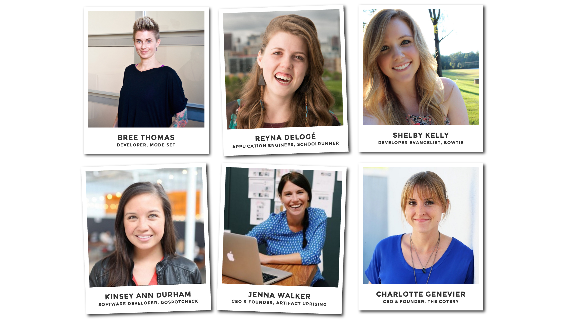
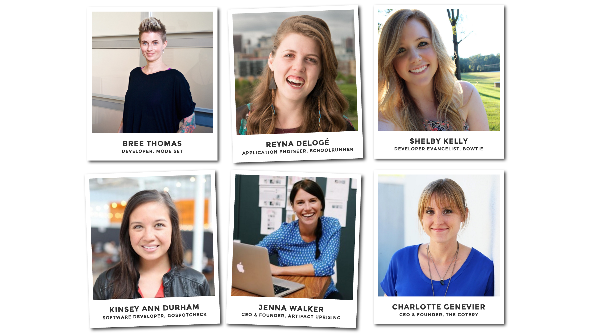
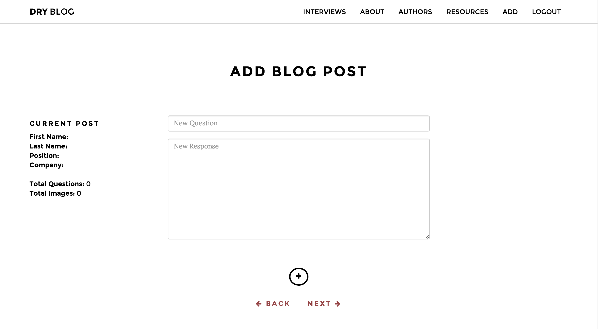
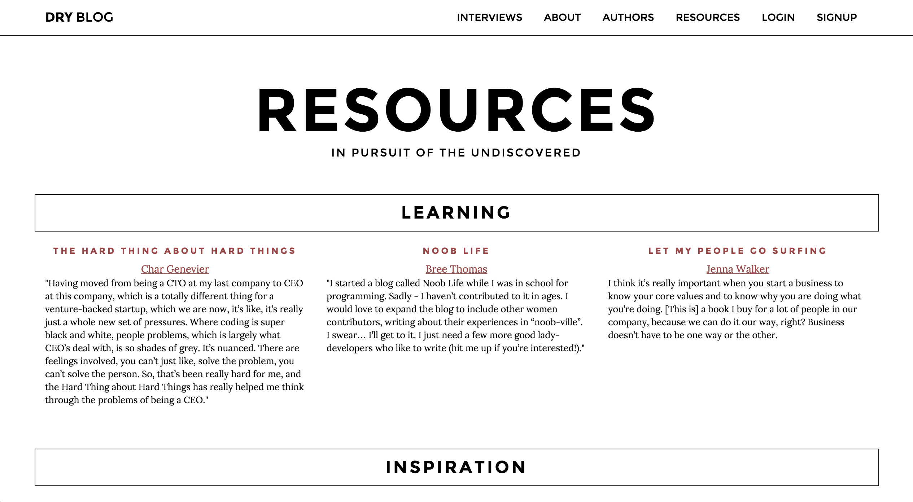

An East Coast native, I moved to Colorado several years ago to pursue an adventurous lifestyle. Exploring various career options since my arrival, I stumbled upon coding and immediately desired to become immersed. I was welcomed into the world of tech by Galvanize, a place where I also solidified my skills. As I continue to advance my abilities, this
An East Coast native, I moved to Colorado several years ago to pursue an adventurous lifestyle. Exploring various career options since my arrival, I stumbled upon coding and immediately desired to become immersed. I was welcomed into the world of tech by Galvanize, a place where I also solidified my skills. As I continue to advance my abilities, this D/R/Y Blog
Sharing the stories of women in tech.
Javascript HTML CSS BootstrapAngularJS Node/Express MongoDB Satellizer
 

D/R/Y Blog Description
Co-founder and creator of this original blog platform with Zoë Adelman. This site features inspirational advice from successful women in the Denver tech scene through exclusive interviews. The purpose of this blog is to serve as a resource for other women in technology and as an inspiration to join the community by creating your own unique story.
Individual page

Add interview admin page
Resources reference page
Home page